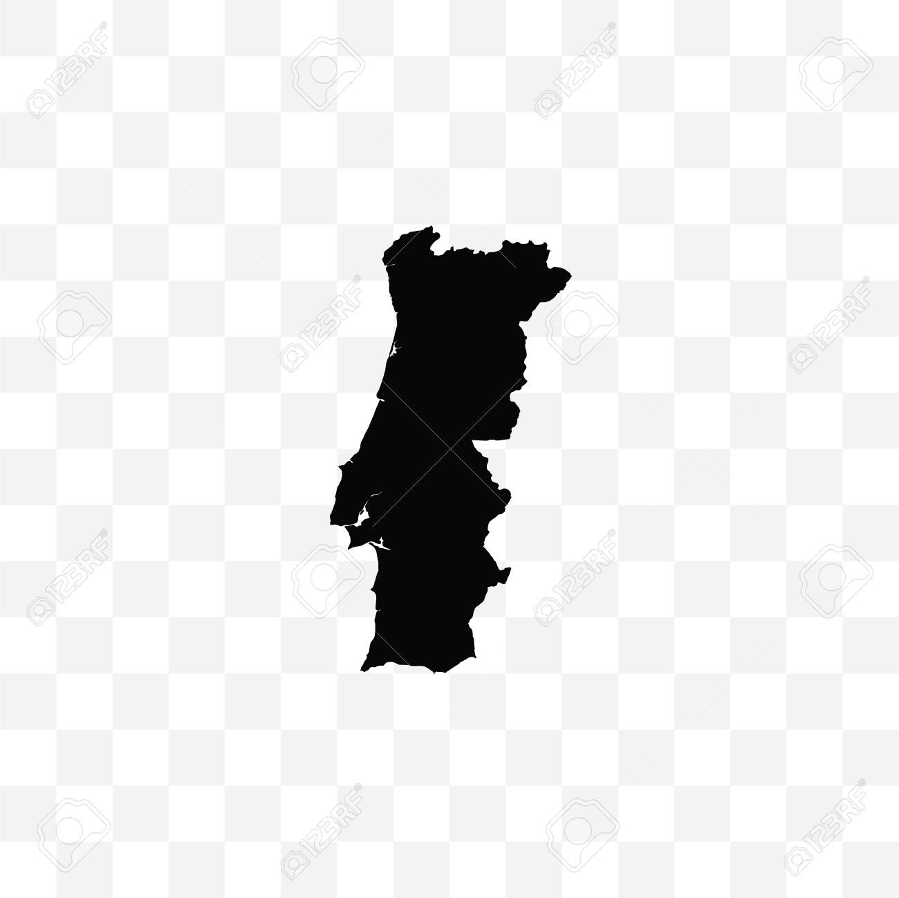
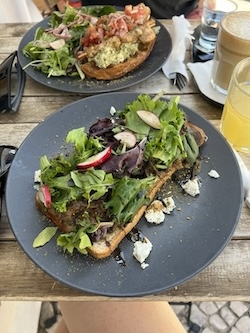
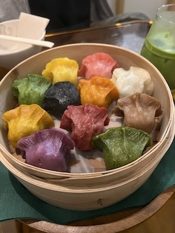
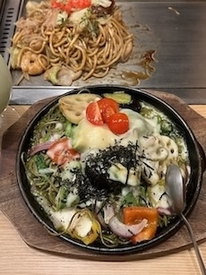
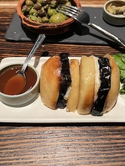
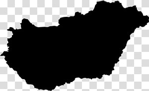
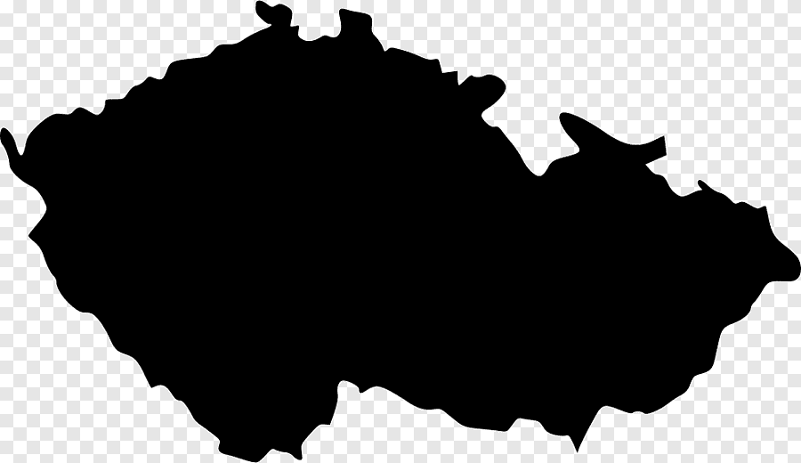
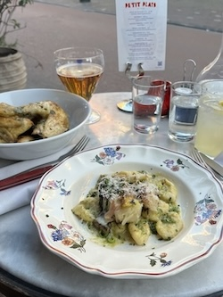
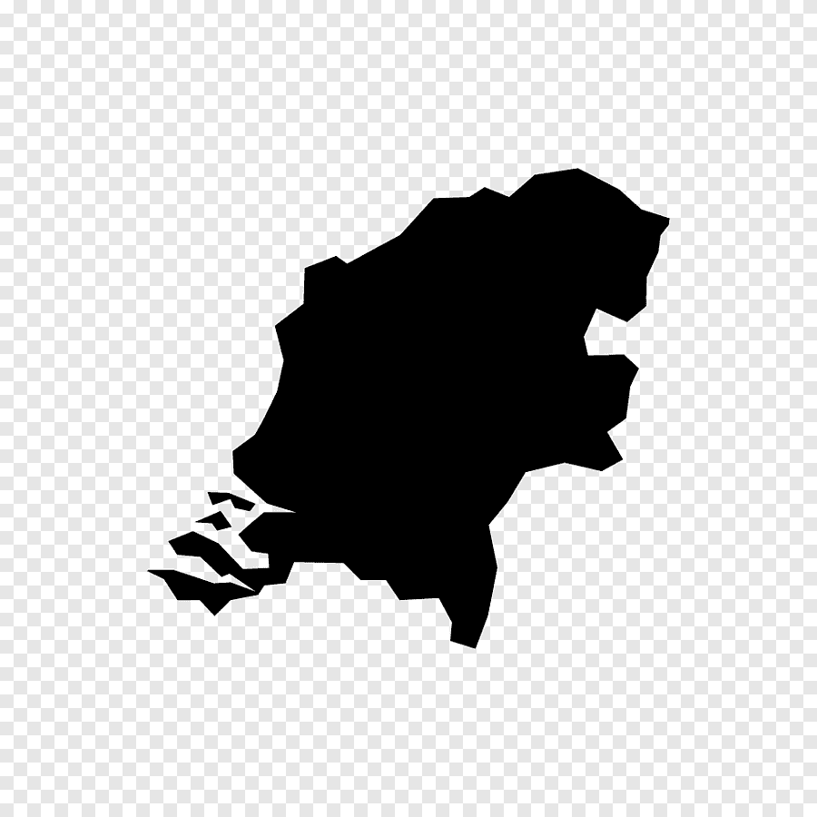

I cannot remember exactly what this was or what was in it but my goodness it was delicious!
Mystery Spanish Soup

First morning in Lisbon and tried some Lebanese food for the first time before exploring the town.
Lebanese Breakfast

Each gyoza had a different flavor and was absolutely stunning. At this price, the US could never :(
Vegetarian Gyoza

This was our first night and dinner in Kyoto. From here on out I learned that some lines are worth it.
Yummiest Dinner EVER

Ok this one isn't actually from my trip to Spain. It's a Spanish restaurant at the Pier in SF. Still very yummy!
Spanish Food


This was the last night in Budapest. I went out to a legit local restaurant there before heading over to the iconic ruin bar Szimpla Kert.
Hungarian Paprikash


I don't know what this was but it was surprisingly sweet and cost less than 8 dollars.
Czech Lentils


BY FAR the yummiest food I've had in the Netherlands.
French at Utrecht